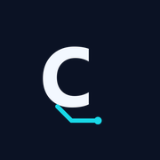
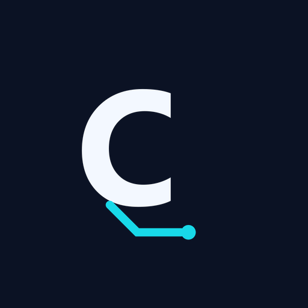

Los logos, en su fondo y su tamaño.
Las versiones oficiales de CuantiLogic y en qué contexto va cada una. Todas salen del manual de marca; acá se ven al tamaño real de uso, no en un catálogo de miniaturas.
01 · Horizontal
La versión de uso general
Es la que va primero. El manual la prioriza en cualquier comunicación.
02 · Vertical
Para espacios compactos
Cuando el ancho no alcanza para la horizontal pero el nombre tiene que estar completo.
03 · Marca reducida
La C sola
Solo para favicon, avatar y lugares donde el nombre ya está escrito. No reemplaza al logotipo en una primera presentación.
Tamaños reales de favicon


04 · Aplicaciones
Dónde más aparece
Los formatos que salen del mismo logotipo y que también están en el sitio.
05 · Reglas
Lo que no se hace
Cuatro reglas del manual que conviene tener a mano antes de armar una pieza.
No deformar ni girar
La proporción se respeta siempre. Si no entra, se usa la vertical o la marca C; no se estira.
No cambiar los colores
Cada fondo tiene su versión. El logotipo no se tiñe con colores de una campaña.
No agregar sombras ni contornos
Si el fondo es complejo, se resuelve con una placa de contraste, no con efectos sobre la marca.
Tamaños mínimos
Horizontal: 180 px de ancho. Vertical: 110 px. Por debajo, se usa la marca C.
Los archivos editables están en el kit de marca. Si necesitás una variante que no está acá, escribinos antes de generarla por tu cuenta.